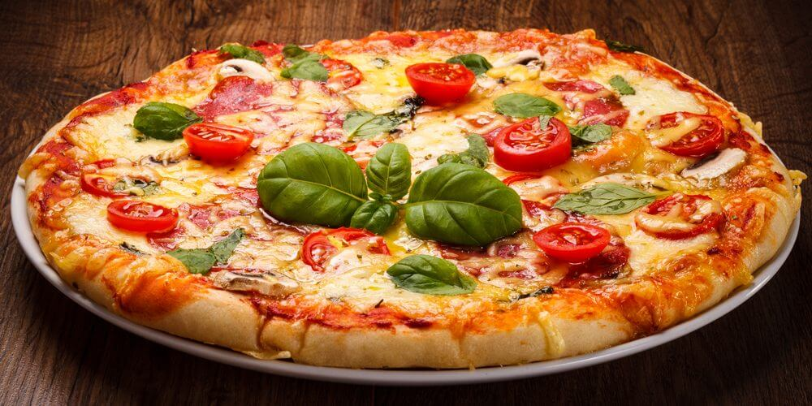

Margherita Pizza

Savor the exquisite flavors of our Classic Margherita Pizza, where a perfectly crispy crust, rich tomato sauce, and velvety mozzarella cheese harmonize with the freshness of basil leaves.
Get ready for a classic italian indulgence! Margherita Pizza is not only authentic but simple and health conscious!
Ingredients:
- 1 pizza dough ball (store-bought or homemade)
- 1/2 cup tomato sauce
- 1 1/2 cups fresh mozzarella cheese, sliced or shredded
- Fresh basil leaves
- 2 tablespoons olive oil
- Salt and pepper to taste
Directions:
- Preheat the Oven:
- Preheat your oven to the highest temperature it can go, usually around 500°F (260°C). If you have a pizza stone, place it in the oven while it preheats.
- Prepare the Dough:
- Roll out the pizza dough on a floured surface to your desired thickness.
- Assemble the Pizza:
- Transfer the rolled-out dough to a pizza peel or an inverted baking sheet dusted with cornmeal or flour.
- Spread the tomato sauce evenly over the dough, leaving a small border for the crust.
- Add the mozzarella cheese on top of the sauce.
- Drizzle olive oil over the pizza and season with salt and pepper.
- Bake the Pizza:
- Carefully slide the pizza onto the preheated pizza stone or directly onto a baking sheet.
- Bake for 10-12 minutes or until the crust is golden and the cheese is bubbly and slightly browned.
- Assemble the Spam Musubi:
- Place the Spam Musubi mold (or Spam can with the bottom removed) on a clean surface.
- Lay a strip of plastic wrap or a piece of plastic food wrap inside the mold for easy removal.
- Place a strip of nori seaweed on the plastic wrap inside the mold.
- Add a layer of rice into the mold, pressing it down gently to create a solid base.
- Lay a slice of cooked Spam on top of the rice.
- Add another layer of rice on top of the Spam and press it down gently.
- Fold the nori strip over the top of the rice and press it to seal the Musubi.
- Serve:
- Remove from the oven, top with fresh basil leaves, slice, and enjoy your homemade Margherita pizza!